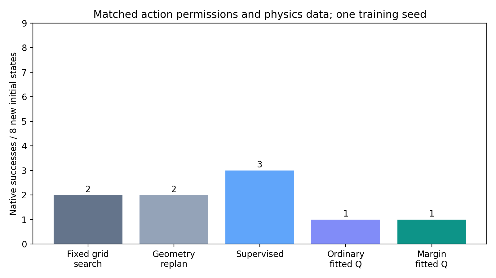
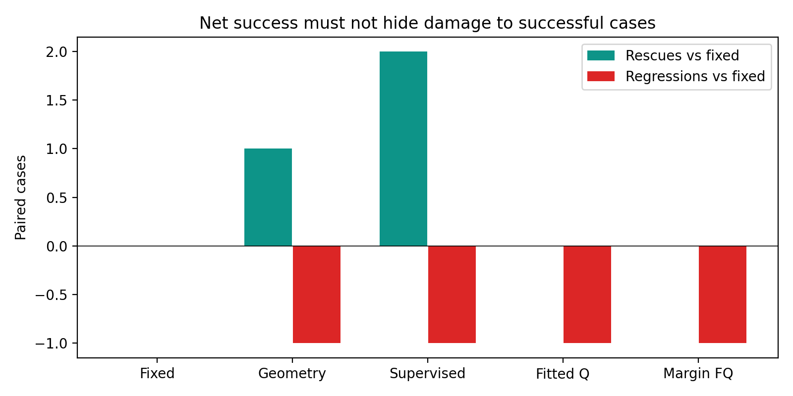
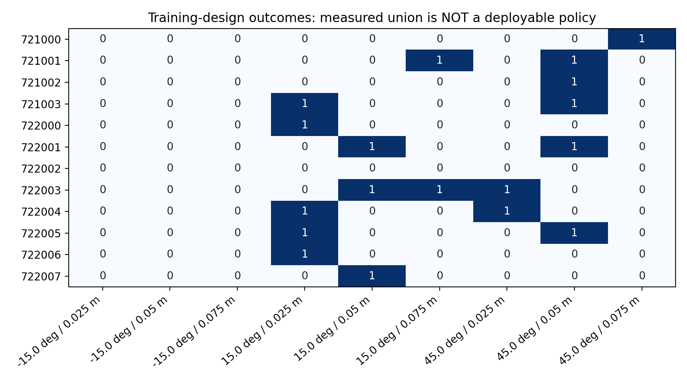
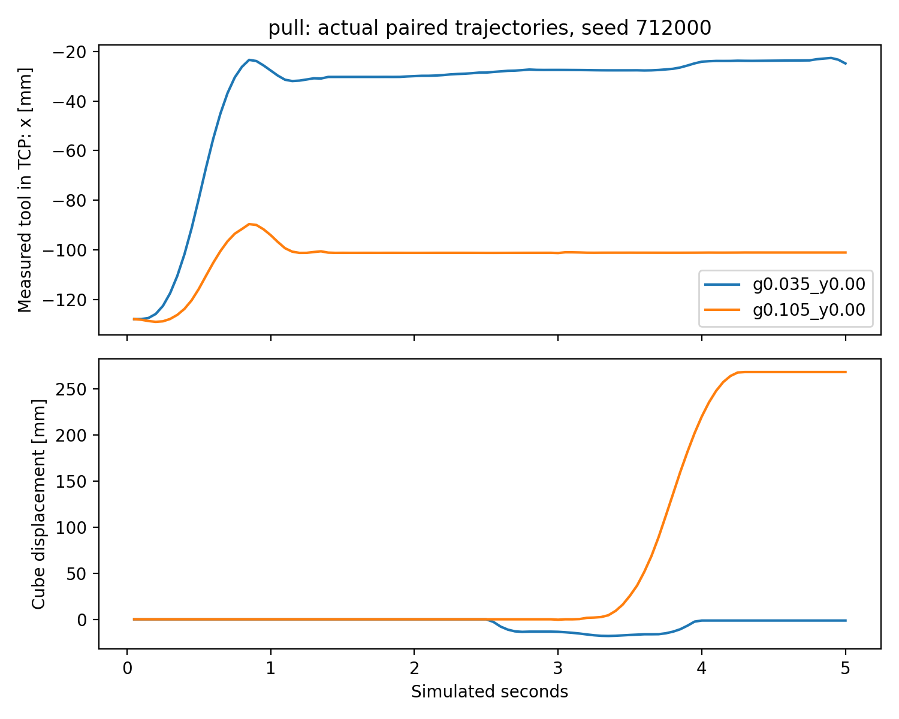
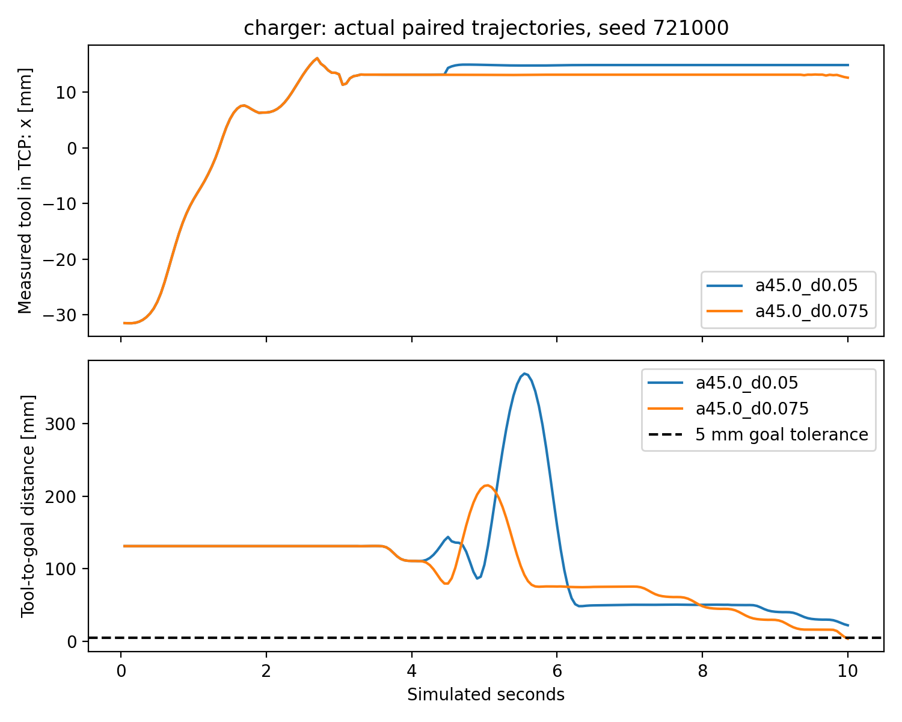
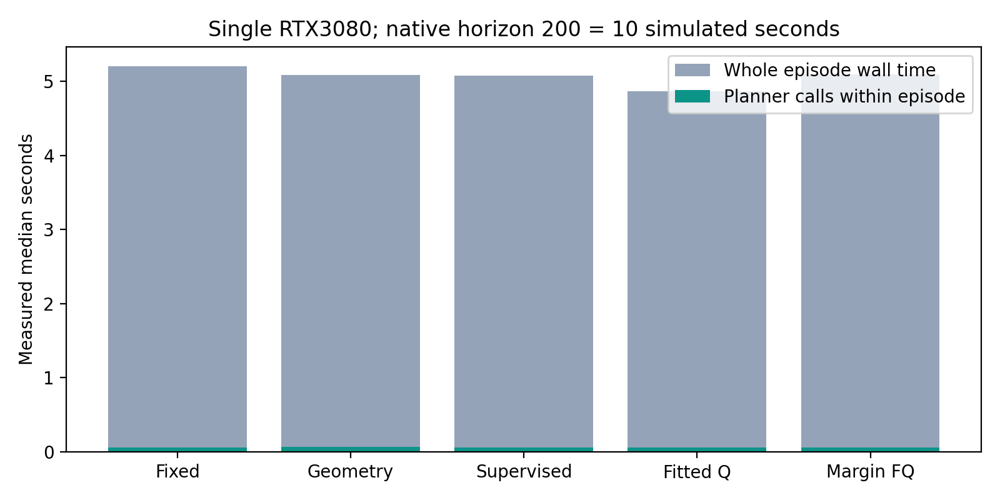

基于 8f201b5 · 公共 ManiSkill 原生物理 · 单张 RTX3080 · 无实机运动
研究决策与限制 · 复现说明 · 核心指标 · 全部原始物理记录
Charger 新 8 初态：固定 2/8、几何 2/8、监督 3/8、普通 FQ 1/8、裕量辅助 FQ 1/8。辅助信号未改善参数选择；不扩大当前训练。

同初态，35 / 105 mm 抓持。真实关节与物体姿态；不是理想轨迹。
保存的真实仿真姿态，纯图形回放，零新增物理步。
第 81 步的记录状态一致；50 / 75 mm 接近，最终位置误差 22.05 / 3.66 mm。有限步数内的实际执行差异。
保存的真实仿真姿态，纯图形回放，零新增物理步。




